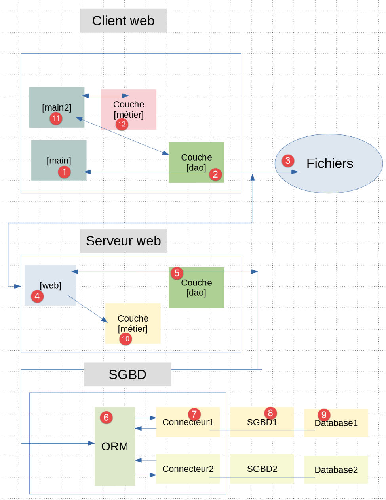
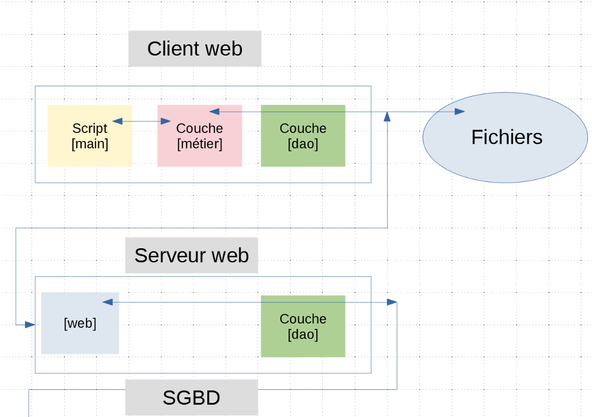

29. تمرين تطبيقي: الإصدار 11
29.1. مقدمة
في الإصدارات السابقة من تطبيق العميل/الخادم لحساب الضريبة، كانت الطبقة [métier] التي تنفذ القواعد المهنية لهذا الحساب موجودة على جانب الخادم. ونقترح الآن نقلها إلى جانب العميل. ما الفائدة من ذلك؟ سيتم نقل جزء من العمل الذي كان يقوم به الخادم إلى جانب العميل. إذا فكرنا في حالة خادم يتلقى استفسارات من N عميل، فسيتم إجراء N عملية حسابية متعلقة بالضرائب من قبل العملاء أنفسهم. في الإصدارات السابقة، كان الخادم هو الذي يقوم بهذه العمليات الحسابية N. ونظرًا لأن الخادم لم يعد يقوم بالحسابات المتعلقة بالضرائب، فإنه سيستجيب لعملائه بشكل أسرع، وبالتالي سيكون قادرًا على خدمة عدد أكبر منهم في وقت واحد.
تصبح بنية العميل/الخادم كما يلي:

- تم نسخ الطبقة [métier] [10] إلى [12] على العميل؛
- تمت إضافة برنامج نصي جديد [main2] [11] إلى العميل؛
سيكون لدى عميل الويب طريقتان لحساب الضريبة على قائمة دافعي الضرائب الموجودة في [3]:
- استخدام طريقة الإصدار السابق. وهي تستخدم الطبقة [métier] [10] من الخادم. وسيستخدم البرنامج النصي [main] هذه الطريقة؛
- الاكتفاء بطلب بيانات مصلحة الضرائب [2-4] من الخادم ثم استخدام الطبقة [métier] و [12] المحلية لدى العميل؛
سنقارن أداء الطريقتين.
29.2. خادم الويب
ستكون بنية خادم الويب كما يلي:

- يتم إنشاء الملف [http-servers/06] في البداية عن طريق نسخ الملف [http-servers/05]. وسنحتفظ بالفعل بما تم تحقيقه في الإصدار 10 السابق. وسنكتفي بإضافة وظيفة جديدة إليه. وتتجسد هذه الوظيفة في وجود وحدة تحكم جديدة هي [get_admindata_controller] [1]. أما وحدة التحكم الأخرى [calculate_tax_controller] فهي في الحقيقة وحدة التحكم القديمة [index_controller] التي تم تغيير اسمها؛
29.3. التكوين
سيقدم الخادم خدمتين URL:
- [/calculate-tax] لحساب الضريبة على قائمة المكلفين التي تم تمريرها في نص POST. وهي تتوافق بالتالي مع خدمة URL و[/] في الإصدار 10 السابق؛
- تقوم [/get-admindata] بإصدار سلسلة jSON لبيانات مصلحة الضرائب؛
تربط التهيئة [config] كل واحدة من هذه القيم URL بوحدة التحكم التي تعالجها:
# قاموس وحدات التحكم في تطبيق الويب
import calculate_tax_controller, get_admindata_controller
controllers = {"calculate-tax": calculate_tax_controller, "get-admindata": get_admindata_controller}
config['controllers'] = controllers
29.4. البرنامج النصي الرئيسي [main]
يعيد البرنامج النصي الرئيسي [main] هيكلة البرنامج النصي [main] من الإصدار السابق:
# ننتظر معلمة mysql أو pgres
import sys
syntaxe = f"{sys.argv[0]} mysql / pgres"
erreur = len(sys.argv) != 2
if not erreur:
sgbd = sys.argv[1].lower()
erreur = sgbd != "mysql" and sgbd != "pgres"
if erreur:
print(f"syntaxe : {syntaxe}")
sys.exit()
# يتم تكوين التطبيق
import config
config = config.configure({'sgbd': sgbd})
# التبعيات
…
# استرداد البيانات من مصلحة الضرائب
erreur = False
try:
# ستكون «admindata» بيانات على مستوى التطبيق للقراءة فقط
config["admindata"] = config["layers"]["dao"].get_admindata()
# سجل النجاح
logger.write("[serveur] connexion à la base de données réussie\n")
except ImpôtsError as ex:
# يتم تسجيل الخطأ
…
…
# في حالة حدوث خطأ، يتم إيقاف العملية
if erreur:
sys.exit(2)
# يمكن تشغيل تطبيق Flask
app = Flask(__name__)
# وحدة التحكم الرئيسية
def main_controller() -> tuple:
# يتم استرداد الإجراء المطلوب
dummy, action=request.path.split('/')
logger = None
try:
# مسجل
logger = Logger(config["logsFilename"])
# يتم تخزينه في ملف تكوين مرتبط بالخيط
thread_config = {"logger": logger}
thread_name = threading.current_thread().name
config[thread_name] = {"config": thread_config}
# يتم تسجيل الطلب
logger.write(f"[index] requête : {request}\n")
# يتم إيقاف الخيط إذا طُلب ذلك
sleep_time = config["sleep_time"]
if sleep_time != 0:
# يكون التوقف عشوائيًا بحيث يتم إيقاف بعض الخيوط دون غيرها
aléa = randint(0, 1)
if aléa == 1:
# تسجيل قبل التوقف المؤقت
logger.write(f"[index] mis en pause du thread pendant {sleep_time} seconde(s)\n")
# التوقف المؤقت
time.sleep(sleep_time)
# يتم تنفيذ الاستعلام بواسطة وحدة التحكم في الاستعلام
controller = config['controllers'][action]
résultat, status_code = controller.execute(request, config)
# هل حدث خطأ فادح؟
if status_code == status.HTTP_500_INTERNAL_SERVER_ERROR:
# يتم إرسال بريد إلكتروني إلى مسؤول التطبيق
config_mail = config["adminMail"]
config_mail["logger"] = logger
SendAdminMail.send(config_mail, json.dumps(résultat, ensure_ascii=False))
# يتم تسجيل الرد في السجل
logger.write(f"[index] {résultat}\n")
# يتم إرسال الرد
print(résultat)
return json_response(résultat, status_code)
except BaseException as erreur:
# يتم تسجيل الخطأ إن أمكن
if logger:
logger.write(f"[index] {erreur}")
# يتم إعداد الرد للعميل
résultat = {"réponse": {"erreurs": [f"{erreur}"]}}
# يتم إرسال الرد
return json_response(résultat, status.HTTP_500_INTERNAL_SERVER_ERROR)
finally:
# يتم إغلاق ملف السجلات إذا كان مفتوحًا
if logger:
logger.close()
# حساب الضريبة
@app.route('/calculate-tax', methods=['POST'])
@auth.login_required
def calculate_tax():
# يتم تمرير السيطرة إلى وحدة التحكم الرئيسية
return main_controller()
# الحصول على البيانات من مصلحة الضرائب
@app.route('/get-admindata', methods=['GET'])
@auth.login_required
def get_admindata():
# يتم تمرير المهمة إلى المراقب الرئيسي
return main_controller()
# التحكم فقط
if __name__ == '__main__':
# تشغيل الخادم
app.config.update(ENV="development", DEBUG=True)
app.run(threaded=True)
- الأسطر 88-93: تعالج الدالة [calculate_tax] البرنامج النصي URL و [/calculate-tax]؛
- الأسطر 95-100: تعالج الدالة [get_admindata] الدالتين URL و [/get-admindata]؛
- هاتان الوظيفتان لا تقومان بأي شيء بمفردهما. فهما تسلمان زمام الأمور فورًا إلى وحدة التحكم الرئيسية [main_controller] في الأسطر 37-86؛
- الأسطر 37-86: وحدة التحكم الرئيسية [main_controller] ليست سوى الدالة [index] من الإصدار السابق مع اختلاف بسيط: فبينما كانت الدالة [index] تعالج دالة URL واحدة فقط، فإن الدالة [main_controller] هنا تعالج دالتين URL. لذلك يجب أن تقوم بإحالة هاتين الملفين إلى أحد وحدة التحكم [calculate_tax_controller, get_admin,data_controller]؛
- السطران 39-40: يتم استرداد الإجراء المطلوب [calculate_tax] أو [get_admindata]. توجد هذه المعلومات في مسار URL [request.path]. حسب الحالة، فإن [request.path] تساوي [/get-admindata] أو [/calculate_tax]. سيؤدي تقسيم السطر 40 إلى الحصول على عنصرين:
- السلسلة الفارغة للجزء الذي يسبق /؛
- اسم الإجراء المطلوب للجزء الذي يلي /؛
- السطران 62-63: بمجرد استرداد الإجراء الخاص بـ URL، يصبح من المعروف أي وحدة تحكم يجب استخدامها لمعالجة URL. توجد هذه المعلومات في التكوين [config]؛
29.5. وحدات التحكم
وحدة التحكم [calculate_tax_controller] ليست سوى وحدة التحكم [index_controller] من الإصدار السابق.
أما وحدة التحكم [get_admindata_controller] فهي كما يلي:
from flask_api import status
from werkzeug.local import LocalProxy
def execute(request: LocalProxy, config: dict) -> tuple:
# إرجاع الرد
return {"réponse": {"result": config["admindata"].asdict()}}, status.HTTP_200_OK
- يجب أن يعرض جهاز التحكم URL و [/get-admindata] سلسلة jSON الخاصة ببيانات إدارة الضرائب؛
- السطر 6: تم استرداد هذه البيانات بواسطة البرنامج النصي الرئيسي [main] ووضعها في القاموس [config] في شكل كائن [AdminData]. يتم إرجاع قاموس هذا الكائن؛
29.6. اختبارات Postman
يتم تشغيل خادم الويب SGBD وخادم البريد الإلكتروني [hMailServer]. ثم باستخدام عميل Postman، يتم حساب الضريبة لعدد من دافعي الضرائب:

في وحدة التحكم Postman، يكون الحوار بين العميل والخادم كما يلي:
POST /calculate-tax HTTP/1.1
Authorization: Basic YWRtaW46YWRtaW4=
Content-Type: application/json
User-Agent: PostmanRuntime/7.26.2
Accept: */*
Cache-Control: no-cache
Postman-Token: 5e71461a-fec8-4315-85e8-41721de939e5
Host: localhost:5000
Accept-Encoding: gzip, deflate, br
Connection: keep-alive
Content-Length: 824
[
{
"marié": "oui",
"enfants": 2,
"salaire": 55555
},
…
{
"marié": "oui",
"enfants": 3,
"salaire": 200000
}
]
HTTP/1.0 200 OK
Content-Type: application/json; charset=utf-8
Content-Length: 1461
Server: Werkzeug/1.0.1 Python/3.8.1
Date: Wed, 29 Jul 2020 07:02:07 GMT
{"réponse": {"results": [{"marié": "oui", "enfants": 2, "salaire": 55555, "impôt": 2814, "surcôte": 0, "taux": 0.14, "décôte": 0, "réduction": 0}, {"marié": "oui", "enfants": 2, "salaire": 50000, "impôt": 1384, "surcôte": 0, "taux": 0.14, "décôte": 384, "réduction": 347…]}}
الآن دعونا نطلب URL و [/get-admindata] مع GET:

حوار العميل/الخادم في وحدة التحكم Postman هو كما يلي:
GET /get-admindata HTTP/1.1
Authorization: Basic YWRtaW46YWRtaW4=
User-Agent: PostmanRuntime/7.26.2
Accept: */*
Cache-Control: no-cache
Postman-Token: 4af342c4-7ecb-4ab2-9e12-d653f81da424
Host: localhost:5000
Accept-Encoding: gzip, deflate, br
Connection: keep-alive
HTTP/1.0 200 OK
Content-Type: application/json; charset=utf-8
Content-Length: 596
Server: Werkzeug/1.0.1 Python/3.8.1
Date: Wed, 29 Jul 2020 07:07:24 GMT
{"réponse": {"result": {"limites": [9964.0, 27519.0, 73779.0, 156244.0, 93749.0], "coeffr": [0.0, 0.14, 0.3, 0.41, 0.45], "coeffn": [0.0, 1394.96, 5798.0, 13913.7, 20163.4], "plafond_decote_couple": 1970.0, "valeur_reduc_demi_part": 3797.0, "plafond_revenus_celibataire_pour_reduction": 21037.0, "plafond_qf_demi_part": 1551.0, "abattement_dixpourcent_max": 12502.0, "plafond_impot_celibataire_pour_decote": 1595.0, "plafond_decote_celibataire": 1196.0, "plafond_revenus_couple_pour_reduction": 42074.0, "id": 1, "abattement_dixpourcent_min": 437.0, "plafond_impot_couple_pour_decote": 2627.0}}}
29.7. العميل على الويب


يتم الحصول على المجلد [http-clients/06] في البداية عن طريق نسخ المجلد [http-clients/05]. وتتمثل مهمة التعديل بشكل أساسي في:
- تعديل التكوين [config_layers] بحيث يتضمن الآن طبقة [métier]. في السابق، كان يحتوي فقط على طبقة [dao]؛
- إضافة طريقة جديدة إلى الطبقة [dao]؛
- كتابة برنامج نصي [main2] يعتمد على طبقة [métier] الخاصة بالعميل لحساب ضرائب دافعي الضرائب؛
29.7.1. تكوين طبقات العميل
يتم تكوين الطبقات في مرحلتين:
- في التكوين [config] الذي يجب أن يتضمن في تبعيات العميل المجلد الذي يحتوي على تنفيذ الطبقة [métier]. وكان هذا المجلد مدرجًا بالفعل في التبعيات:
absolute_dependencies = [
# مجلدات المشروع
# BaseEntity، MyException
f"{root_dir}/classes/02/entities",
# InterfaceImpôtsDao، InterfaceImpôtsMétier، InterfaceImpôtsUi
f"{root_dir}/impots/v04/interfaces",
# AbstractImpôtsdao، ImpôtsConsole، ImpôtsMétier
f"{root_dir}/impots/v04/services",
# ImpotsDaoWithAdminDataInDatabase
f"{root_dir}/impots/v05/services",
# AdminData، ImpôtsError، TaxPayer
f"{root_dir}/impots/v04/entities",
# الثوابت، الشرائح
f"{root_dir}/impots/v05/entities",
# ImpôtsDaoWithHttpClient
f"{script_dir}/../services",
# نصوص التكوين
script_dir,
# مسجل
f"{root_dir}/impots/http-servers/02/utilities",
]
ثم يجب تعديل الملف [config_layers]:
def configure(config: dict) -> dict:
# إنشاء مثيلات طبقات التطبيق
# الطبقة [métier]
from ImpôtsMétier import ImpôtsMétier
métier = ImpôtsMétier()
# طبقة DAO
from ImpôtsDaoWithHttpClient import ImpôtsDaoWithHttpClient
dao = ImpôtsDaoWithHttpClient(config)
# إرجاع تكوين الطبقات
return {
"dao": dao,
"métier": métier
}
- الأسطر 4-6: إنشاء مثيل للطبقة [métier]؛
- الأسطر 13-16: يتم عرض الطبقة [métier] في قاموس الطبقات؛
29.7.2. تنفيذ الطبقة [dao]

ستعرض الطبقة [dao] الواجهة [InterfaceImpôtsDaoWithHttpClient] التالية:
from abc import abstractmethod
from AbstractImpôtsDao import AbstractImpôtsDao
class InterfaceImpôtsDaoWithHttpClient(AbstractImpôtsDao):
# حساب الضريبة
@abstractmethod
def calculate_tax_in_bulk_mode(self, taxpayers: list):
pass
- السطر 5: ترث الواجهة [InterfaceImpôtsDaoWithHttpClient] الفئة المجردة [AbstractImpôtsDao] التي تدير الوصول إلى نظام ملفات العميل. تجدر الإشارة إلى أنها تحتوي على طريقة مجردة [get_admindata]؛
- الأسطر 7-10: تسمح الطريقة [calculate_tax_in_bulk_mode] التي حددناها في الإصدار السابق بحساب الضريبة لقائمة من دافعي الضرائب؛
يتم تنفيذ هذه الواجهة بواسطة الفئة [ImpôtsDaoWithHttpClient] التالية:
# الواردات
import json
import requests
from flask_api import status
from AbstractImpôtsDao import AbstractImpôtsDao
from AdminData import AdminData
from ImpôtsError import ImpôtsError
from InterfaceImpôtsDaoWithHttpClient import InterfaceImpôtsDaoWithHttpClient
class ImpôtsDaoWithHttpClient(InterfaceImpôtsDaoWithHttpClient):
# الشركة المصنعة
def __init__(self, config: dict):
# تهيئة العنصر الأصلي
AbstractImpôtsDao.__init__(self, config)
# تخزين عناصر التكوين
# التكوين العام
self.__config = config
# الخادم
self.__config_server = config["server"]
# وضع التصحيح
self.__debug = config["debug"]
# مسجل
self.__logger = None
def get_admindata(self) -> AdminData:
# السماح بإرسال الاستثناءات
# عنوان URL للخدمة
config_server = self.__config_server
config_services = config_server['url_services']
url_service = f"{config_server['urlServer']}{config_services['get-admindata']}"
# الاتصال
if config_server['authBasic']:
response = requests.get(url_service,
auth=(
config_server["user"]["login"],
config_server["user"]["password"]))
else:
response = requests.get(url_service)
# وضع التصحيح؟
if self.__debug:
# مسجل
if not self.__logger:
self.__logger = self.__config['logger']
# يتم التسجيل
self.__logger.write(f"{response.text}\n")
# رمز الحالة
status_code = response.status_code
# النتيجة في شكل قاموس
résultat = json.loads(response.text)
# إذا كان رمز الحالة مختلفًا عن 200 OK
if status_code != status.HTTP_200_OK:
raise ImpôtsError(58, résultat['réponse']['erreurs'])
# يتم إرجاع النتيجة (قاموس)
return AdminData().fromdict(résultat["réponse"]["result"])
# حساب الضريبة في الوضع الجماعي
def calculate_tax_in_bulk_mode(self, taxpayers: list):
# يُسمح بإرجاع الاستثناءات
…
- السطر 13: الفئة [ImpôtsDaoWithHttpClient] تُنفذ الواجهة [InterfaceImpôtsDaoWithHttpClient]. وبالتالي فهي مشتقة من الفئة [AbstractImpôtsDao]؛
- السطران 65-66: الطريقة [calculate_tax_in_bulk_mode] التي تمت دراستها في الإصدار السابق؛
- الأسطر 29-62: الطريقة [get_admindata] التي أعلنتها الفئة الأم [AbstractImpôtsDao] على أنها مجردة. وبالتالي، يتم تنفيذها في الفئة الفرعية؛
- الأسطر 33-35: يتم تحديد URL لخدمة الويب التي يجب أن تستعلم عنها الطريقة [get-admindata]. يتم تعريف معرفات الخدمة هذه في تكوين العميل:
# خادم حساب الضريبة
"server": {
"urlServer": "http://127.0.0.1:5000",
"authBasic": True,
"user": {
"login": "admin",
"password": "admin"
},
"url_services": {
"calculate-tax": "/calculate-tax",
"get-admindata": "/get-admindata"
}
},
- (تابع)
- الأسطر 9-12: خدمتا URL الخاصتان بخادم الويب؛
- الأسطر 37-44: يتم استعلام خدمة URL بشكل متزامن؛
- الأسطر 46-42: إذا تطلبت الإعدادات ذلك، يتم تسجيل استجابة الخادم؛
- السطر 57: نعلم أن الخادم أرسل سلسلة jSON من قاموس؛
- الأسطر 58-60: إذا لم يكن حالة الرد HTTP هي 200، يتم إثارة استثناء؛
- الأسطر 61-62: يتم إرجاع الكائن [AdminData] الذي يحتوي على بيانات مصلحة الضرائب المرسلة من الخادم؛
29.8. البرامج النصية [main, main2]
النص البرمجي [main] هو النص الخاص بالإصدار السابق. وهو يستخدم الطريقة [calculate_tax_in_bulk_mode] الخاصة بالطبقة [dao]، وبالتالي يستخدم الطبقة [métier] الخاصة بالخادم؛
يقوم البرنامج النصي [main2] بنفس وظيفة البرنامج النصي [main]، ولكنه يستخدم الطبقة [métier] الخاصة بالعميل:
# تكوين التطبيق
import config
config = config.configure({})
# التبعيات
from ImpôtsError import ImpôtsError
from Logger import Logger
logger = None
# الكود
try:
# مسجل
logger = Logger(config["logsFilename"])
# يتم تخزينه في ملف التكوين
config["logger"] = logger
# سجل البداية
logger.write("début du calcul de l'impôt des contribuables\n")
# يتم استرداد الطبقة [dao]
dao = config["layers"]["dao"]
# يتم استرداد دافعي الضرائب
taxpayers = dao.get_taxpayers_data()["taxpayers"]
# المكلفين؟
if not taxpayers:
raise ImpôtsError(36, f"Pas de contribuables valides dans le fichier {config['taxpayersFilename']}")
# يتم استرداد بيانات مصلحة الضرائب
admindata = dao.get_admindata()
# حساب ضرائب المكلفين بواسطة الطبقة [métier]
métier = config['layers']['métier']
for taxpayer in taxpayers:
métier.calculate_tax(taxpayer, admindata)
# يتم تسجيل النتائج في الملف jSON
dao.write_taxpayers_results(taxpayers)
# باستثناء BaseException باعتباره خطأً:
# # عرض الخطأ
# print(f"حدث الخطأ التالي: {erreur}")
finally:
# إغلاق أداة التسجيل
if logger:
# سجل النهاية
logger.write("fin du calcul de l'impôt des contribuables\n")
# إغلاق أداة التسجيل
logger.close()
# انتهينا
print("Travail terminé...")
- السطران 26-27: يتم استرداد بيانات مصلحة الضرائب من الخادم؛
- الأسطر 28-31: ثم يتم حساب ضرائب المكلفين محليًّا؛
29.9. اختبارات العميل
في كل من البرامج النصية [main, main2]، يتم تسجيل بداية ونهاية البرنامج النصي. وبذلك يمكن حساب مدة تنفيذ البرنامج النصي. دعونا نضع بعض التوقعات:
- النص البرمجي [main] من الإصدار السابق:
- يُنشئ N خيوطًا تعمل في وقت واحد؛
- يعالج كل خيط مجموعة من دافعي الضرائب ويقوم بحساب ضرائبهم عبر استعلام واحد إلى الخادم؛
- نظرًا لأن الخيوط N تعمل في وقت واحد، يتم إطلاق الاستعلام N+1 قبل أن يتلقى الاستعلام N إجابته. وبالتالي، فإن الاستعلامات N تكلف أكثر من استعلام واحد، ولكن ربما ليس أكثر بكثير. علاوة على ذلك، هناك 11 عملية حسابية متخصصة (عدد دافعي الضرائب) على الخادم؛
- البرنامج النصي [main2] في هذا الإصدار:
- يقوم بإرسال استعلام واحد إلى الخادم؛
- يقوم بإجراء 11 عملية حسابية متخصصة محليًّا على العميل؛
ستستغرق الحسابات التشغيلية نفس المدة سواء على الخادم أو على العميل. سيكون الفرق إذن في الطلبات. يمكننا إذن توقع أن تكون مدة تنفيذ [main] أطول قليلاً من مدة تنفيذ [main2].
نقوم بتشغيل خادم الإصدار 11، و SGBD، وخادم البريد [hMailServer]. على جانب الخادم، نضبط المعلمة [sleep_time] على الصفر حتى يتم تنفيذ الاختبارين في نفس الظروف.
التشغيل 1 [main]
يُنتج تنفيذ [main] السجلات التالية:
2020-07-29 14:35:50.016079, MainThread : début du calcul de l'impôt des contribuables
2020-07-29 14:35:50.016079, Thread-1 : début du calcul de l'impôt des 1 contribuables
2020-07-29 14:35:50.016079, Thread-2 : début du calcul de l'impôt des 4 contribuables
2020-07-29 14:35:50.016079, Thread-3 : début du calcul de l'impôt des 2 contribuables
2020-07-29 14:35:50.016079, Thread-4 : début du calcul de l'impôt des 2 contribuables
2020-07-29 14:35:50.024426, Thread-5 : début du calcul de l'impôt des 2 contribuables
2020-07-29 14:35:50.050473, Thread-1 : {"réponse": {"results": [{"marié": "oui", "enfants": 2, "salaire": 55555, "impôt": 2814, "surcôte": 0, "taux": 0.14, "décôte": 0, "réduction": 0}]}}
2020-07-29 14:35:50.050473, Thread-1 : fin du calcul de l'impôt des 1 contribuables
2020-07-29 14:35:50.050473, Thread-3 : {"réponse": {"results": [{"marié": "oui", "enfants": 3, "salaire": 100000, "impôt": 9200, "surcôte": 2180, "taux": 0.3, "décôte": 0, "réduction": 0}, {"marié": "oui", "enfants": 5, "salaire": 100000, "impôt": 4230, "surcôte": 0, "taux": 0.14, "décôte": 0, "réduction": 0}]}}
2020-07-29 14:35:50.051214, Thread-3 : fin du calcul de l'impôt des 2 contribuables
2020-07-29 14:35:50.051214, Thread-5 : {"réponse": {"results": [{"marié": "non", "enfants": 0, "salaire": 200000, "impôt": 64210, "surcôte": 7498, "taux": 0.45, "décôte": 0, "réduction": 0}, {"marié": "oui", "enfants": 3, "salaire": 200000, "impôt": 42842, "surcôte": 17283, "taux": 0.41, "décôte": 0, "réduction": 0}]}}
2020-07-29 14:35:50.051214, Thread-5 : fin du calcul de l'impôt des 2 contribuables
2020-07-29 14:35:50.051214, Thread-2 : {"réponse": {"results": [{"marié": "oui", "enfants": 2, "salaire": 50000, "impôt": 1384, "surcôte": 0, "taux": 0.14, "décôte": 384, "réduction": 347}, {"marié": "oui", "enfants": 3, "salaire": 50000, "impôt": 0, "surcôte": 0, "taux": 0.14, "décôte": 720, "réduction": 0}, {"marié": "non", "enfants": 2, "salaire": 100000, "impôt": 19884, "surcôte": 4480, "taux": 0.41, "décôte": 0, "réduction": 0}, {"marié": "non", "enfants": 3, "salaire": 100000, "impôt": 16782, "surcôte": 7176, "taux": 0.41, "décôte": 0, "réduction": 0}]}}
2020-07-29 14:35:50.051214, Thread-2 : fin du calcul de l'impôt des 4 contribuables
2020-07-29 14:35:50.051214, Thread-4 : {"réponse": {"results": [{"marié": "non", "enfants": 0, "salaire": 100000, "impôt": 22986, "surcôte": 0, "taux": 0.41, "décôte": 0, "réduction": 0}, {"marié": "oui", "enfants": 2, "salaire": 30000, "impôt": 0, "surcôte": 0, "taux": 0.0, "décôte": 0, "réduction": 0}]}}
2020-07-29 14:35:50.051214, Thread-4 : fin du calcul de l'impôt des 2 contribuables
2020-07-29 14:35:50.051214, MainThread : fin du calcul de l'impôt des contribuables
استغرقت مدة التنفيذ [051214-016079] نانوثانية (السطر 17 – السطر 1)، أي 35 مللي ثانية و135 نانوثانية.
ونلاحظ أنه بين الطلب الأول المقدم إلى الخادم وآخر استجابة تلقاها العميل، توجد نفس المدة [051214-016079] (السطر 15 – السطر 1)، أي 35 مللي ثانية و135 نانوثانية.
التنفيذ 2 [main2]
يُنتج تنفيذ [main2] السجلات التالية:
2020-07-29 14:41:03.303520, MainThread : début du calcul de l'impôt des contribuables
2020-07-29 14:41:03.345084, MainThread : {"réponse": {"result": {"limites": [9964.0, 27519.0, 73779.0, 156244.0, 13500.0], "coeffr": [0.0, 0.14, 0.3, 0.41, 0.45], "coeffn": [0.0, 1394.96, 5798.0, 13913.7, 20163.4], "plafond_decote_couple": 1970.0, "valeur_reduc_demi_part": 3797.0, "plafond_revenus_celibataire_pour_reduction": 21037.0, "plafond_qf_demi_part": 1551.0, "abattement_dixpourcent_max": 12502.0, "plafond_impot_celibataire_pour_decote": 1595.0, "plafond_decote_celibataire": 1196.0, "plafond_revenus_couple_pour_reduction": 42074.0, "id": 1, "abattement_dixpourcent_min": 437.0, "plafond_impot_couple_pour_decote": 2627.0}}}
2020-07-29 14:41:03.349975, MainThread : fin du calcul de l'impôt des contribuables
استغرقت مدة التنفيذ [349975-303520] نانوثانية (السطر 3 - السطر 1)، أي 46 مللي ثانية و455 نانوثانية. وبشكل غير متوقع تمامًا، فإن [main] أسرع من [main2].
ونلاحظ أن الاستعلام الوحيد لـ [main2] استغرق [345084-303520] (السطر 2 – السطر 1)، أي 41 مللي ثانية و564 نانوثانية. ثم استغرق حساب الضريبة [349975-345084] (السطر 3 – السطر 2)، أي 4 مللي ثانية و91 نانوثانية. الطلب HTTP هو الذي يحدد مدة التنفيذ. ومن المفاجئ أن نلاحظ هنا أن الطلب الفردي [main2] استغرق وقتًا أطول من الطلبات الأربعة المتزامنة [main] و[35 millisecondes].
أما على جانب الخادم، فإليكم السجلات التالية:
2020-07-29 14:35:27.047721, MainThread : [serveur] démarrage du serveur
2020-07-29 14:35:27.140927, MainThread : [serveur] connexion à la base de données réussie
2020-07-29 14:35:28.790716, MainThread : [serveur] démarrage du serveur
2020-07-29 14:35:28.847518, MainThread : [serveur] connexion à la base de données réussie
2020-07-29 14:35:50.039178, Thread-2 : [index] requête : <Request 'http://127.0.0.1:5000/calculate-tax' [POST]>
2020-07-29 14:35:50.039178, Thread-3 : [index] requête : <Request 'http://127.0.0.1:5000/calculate-tax' [POST]>
2020-07-29 14:35:50.043220, Thread-4 : [index] requête : <Request 'http://127.0.0.1:5000/calculate-tax' [POST]>
2020-07-29 14:35:50.044307, Thread-5 : [index] requête : <Request 'http://127.0.0.1:5000/calculate-tax' [POST]>
2020-07-29 14:35:50.045796, Thread-2 : [index] {'réponse': {'results': [{'marié': 'oui', 'enfants': 3, 'salaire': 100000, 'impôt': 9200, 'surcôte': 2180, 'taux': 0.3, 'décôte': 0, 'réduction': 0}, {'marié': 'oui', 'enfants': 5, 'salaire': 100000, 'impôt': 4230, 'surcôte': 0, 'taux': 0.14, 'décôte': 0, 'réduction': 0}]}}
2020-07-29 14:35:50.045796, Thread-3 : [index] {'réponse': {'results': [{'marié': 'oui', 'enfants': 2, 'salaire': 55555, 'impôt': 2814, 'surcôte': 0, 'taux': 0.14, 'décôte': 0, 'réduction': 0}]}}
2020-07-29 14:35:50.046825, Thread-6 : [index] requête : <Request 'http://127.0.0.1:5000/calculate-tax' [POST]>
2020-07-29 14:35:50.046825, Thread-6 : [index] {'réponse': {'results': [{'marié': 'oui', 'enfants': 2, 'salaire': 50000, 'impôt': 1384, 'surcôte': 0, 'taux': 0.14, 'décôte': 384, 'réduction': 347}, {'marié': 'oui', 'enfants': 3, 'salaire': 50000, 'impôt': 0, 'surcôte': 0, 'taux': 0.14, 'décôte': 720, 'réduction': 0}, {'marié': 'non', 'enfants': 2, 'salaire': 100000, 'impôt': 19884, 'surcôte': 4480, 'taux': 0.41, 'décôte': 0, 'réduction': 0}, {'marié': 'non', 'enfants': 3, 'salaire': 100000, 'impôt': 16782, 'surcôte': 7176, 'taux': 0.41, 'décôte': 0, 'réduction': 0}]}}
2020-07-29 14:35:50.046825, Thread-4 : [index] {'réponse': {'results': [{'marié': 'non', 'enfants': 0, 'salaire': 200000, 'impôt': 64210, 'surcôte': 7498, 'taux': 0.45, 'décôte': 0, 'réduction': 0}, {'marié': 'oui', 'enfants': 3, 'salaire': 200000, 'impôt': 42842, 'surcôte': 17283, 'taux': 0.41, 'décôte': 0, 'réduction': 0}]}}
2020-07-29 14:35:50.046825, Thread-5 : [index] {'réponse': {'results': [{'marié': 'non', 'enfants': 0, 'salaire': 100000, 'impôt': 22986, 'surcôte': 0, 'taux': 0.41, 'décôte': 0, 'réduction': 0}, {'marié': 'oui', 'enfants': 2, 'salaire': 30000, 'impôt': 0, 'surcôte': 0, 'taux': 0.0, 'décôte': 0, 'réduction': 0}]}}
2020-07-29 14:41:03.341582, Thread-7 : [index] requête : <Request 'http://127.0.0.1:5000/get-admindata' [GET]>
2020-07-29 14:41:03.341582, Thread-7 : [index] {'réponse': {'result': {'limites': [9964.0, 27519.0, 73779.0, 156244.0, 13500.0], 'coeffr': [0.0, 0.14, 0.3, 0.41, 0.45], 'coeffn': [0.0, 1394.96, 5798.0, 13913.7, 20163.4], 'plafond_decote_couple': 1970.0, 'valeur_reduc_demi_part': 3797.0, 'plafond_revenus_celibataire_pour_reduction': 21037.0, 'plafond_qf_demi_part': 1551.0, 'abattement_dixpourcent_max': 12502.0, 'plafond_impot_celibataire_pour_decote': 1595.0, 'plafond_decote_celibataire': 1196.0, 'plafond_revenus_couple_pour_reduction': 42074.0, 'id': 1, 'abattement_dixpourcent_min': 437.0, 'plafond_impot_couple_pour_decote': 2627.0}}}
- السطر 5: الطلب الأول من العميل [main]؛
- السطر 14: آخر استجابة للعميل [main]. تفصل بينهما 6 مللي ثانية و647 نانوثانية؛
- السطران 15-16: الطلب الوحيد للعميل [main2]. الرد فوري؛